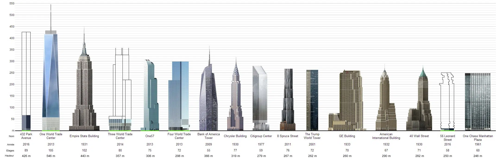
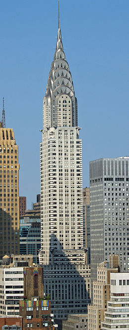
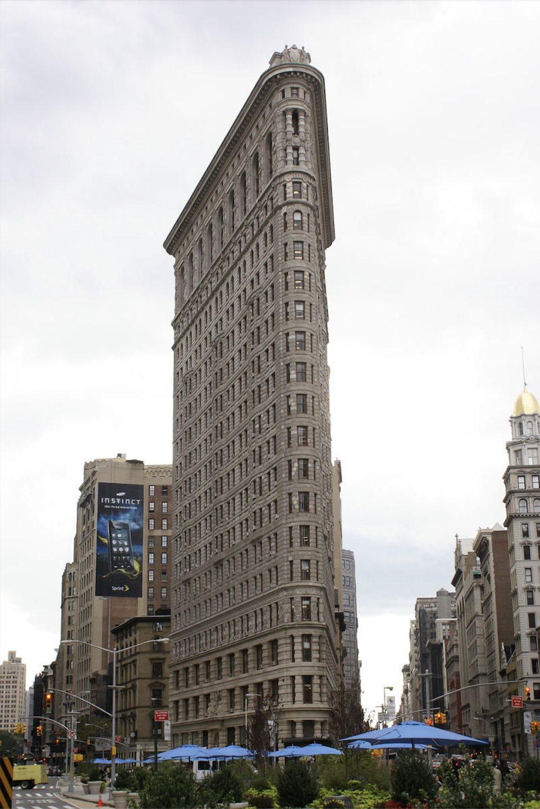

Les Building New Yorkais
Les gratte-ciels de New York sont emblématiques, symbolisant puissance et innovation architecturale. Ils font d'elle la troisième ville avec le plus de gratte-ciels au monde. Les differentes architectures de ces derniers sont issues de différentes époques et de differentes périodes architecturales créant une variétée unique au monde. Je vais vous présenter certains d'entre eux.
L'empire state building

L'Empire State Building, inauguré en 1931, est un symbole incontournable de New York et un chef-d'œuvre d'architecture Art déco. Haut de 443 mètres avec son antenne, il a été le plus grand bâtiment du monde pendant près de 40 ans. Construit en pleine Dépression, il incarne la résilience et l’ambition américaine. Son observatoire offre une vue panoramique unique sur Manhattan. La nuit, ses lumières colorées ajoutent une touche spectaculaire à la skyline.
Chrisler tower
Le Chrysler Building, terminé en 1930, est l'un des joyaux architecturaux Art déco de New York. Son sommet en acier inoxydable, avec ses motifs en forme de V et ses gargouilles inspirées des bouchons de radiateur de Chrysler, est reconnaissable entre tous. Construit pour représenter le succès de l'industrie automobile, il reste l'un des plus élégants gratte-ciel de la ville. Sa silhouette distincte fait de lui une icône incontournable de la skyline new-yorkaise.
Wrold trade center building

Le One World Trade Center, aussi appelé la Freedom Tower, est le plus haut gratte-ciel de l’hémisphère occidental. Inauguré en 2014, il s'élève à 541 mètres en hommage aux tours jumelles disparues le 11 septembre 2001. Son design moderne et ses façades vitrées symbolisent la résilience et l'unité. Abritant bureaux et commerces, son observatoire offre une vue imprenable à 360 degrés sur la ville. C’est aujourd’hui un symbole de renaissance pour New York.
Flatiron
Le Flatiron Building, achevé en 1902, est l’un des premiers gratte-ciels emblématiques de New York. Sa forme triangulaire unique, située à l’intersection de Broadway et de la 5e Avenue, rappelle celle d’un fer à repasser. Conçu par l'architecte Daniel Burnham, il a marqué l'architecture moderne et reste l'un des bâtiments les plus photographiés de la ville. Avec sa silhouette distinctive, il est une véritable icône du quartier de Manhattan.